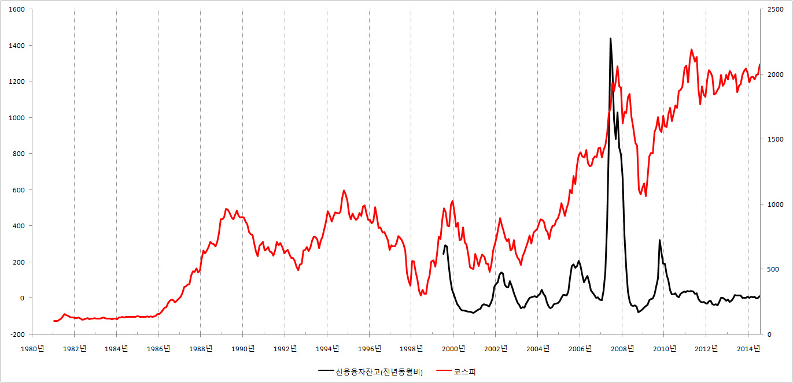

■ 신용융자와 주가의 관계는?
☞
기초지식 : 신용융자,
튤립투기
신용융자가
무서운 줄 알면서도 우리가 그 유혹을 떨치지 못하는 이유는 무엇일까요? 여러 이유가 있겠지만 가장 결정적
이유는 자신감이 아닐까 생각합니다. 여러 지인들로 부터 얻은 정보와 그동안의 투자에서 터득한 동물적
감각, 그리고 재무제표는
물론이요 그래프까지 예쁘게 나올 때! 우리는 이때 신용융자의 유혹에 빠질 수밖에 없습니다.
하지만 우리의 자신감이 과연 기대했던 결과를 가져 왔을까요? 그래프를 통해 신용융자와 주가의
관계를 살펴보겠습니다.

어떻습니까? 놀랍지 않습니까? 자신감이 가득했기에, 너무나 확신했기에 과감하게 신용융자를 했는데...
우리의 신용융자가 극에 다다랐을 때 어김없이 주가가 폭락을 했습니다.
한두 번의 신용융자로 대박을 터트리고, 또는 그러한 무용담을 듣고 느낌충만해 너도나도 신용융자를 하기위해
모여 드는 순간! 바로 그 순간 주식시장은 추락을 했던 것입니다.
우리 스스로는 주가상승이라는 너무나 확실한 사실에 배팅을 했지만, 결국 그것은 확신이 아니라 탐욕이었던
것입니다. 튤립가격은
끝없이 뛸 것이라 믿고 외상으로, 대출로 투기에 뛰어들었던 사람들처럼 우리는 탐욕에 눈이 멀었던 것입니다.
그리고 주식시장은 주가폭락 이라는 이름으로 우리의 탐욕을 응징했습니다.
우리는 왜 이런 어리석은 행동을 반복 하는 것일까요? 인류의 빛나는 얼을 되새김질이라도 하는 것일까요?